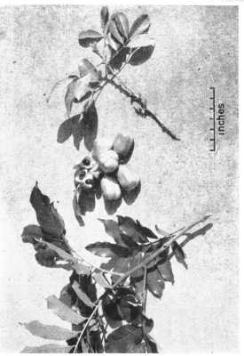

|
ECONOMICALLY
IMPORTANT PLANTS OF INDIA |
| Under-utilized Food and Fodder species and their wild relatives | Contributed by Ms.M.L Annapurna And Dr. Dhanapal, UAS, Bangalore |
Blighia sapida

Phenology:
There is some flowering and fruiting all year in Jamaica. In Florida, flowers
appear in spring and the fruits in mid summer and there may be a light blooming
period in the fall. In the Bahamas, there are 2 distinct crops a year, one from
February through April and the second from July to October.
Pollinators :
Seed Biology:
Seed Germination :
Climate and soil:
The akee tree is
tropical to subtropical; flourishes from sea-level to an elevation of 3,000ft
(900 m) in Jamaica. It does not bear fruit in Guatemala City; fruits heavily in
southern Florida where young trees have been killed by winter cold but mature
trees have escaped serious injury during brief periods of 26° F (-3.33° C).The
tree does very well on oolitic limestone and on sand in southern Florida and the
Bahamas, though it grows faster in more fertile soils.
Cultivation:
Akee trees are grown from seeds
or by shield-budding, and show very little variation. In European greenhouses,
cuttings of ripe shoots are rooted in sand and raised in a mixture of peat and
loam. In warm climates, the tree grows fast and requires little cultural
attention.
Harvesting
Practices and yield:
Parts used Uses:
1.Cultivated for its edible fruits.
Chemistry
MAJOR PESTS AND DISEASES
Economic Potential and Uses
Fruits.
Food Value Per 100 g of Raw Arils*
Moisture
57.60 g
Protein
8.75 g
Fat
18.78 g
Fiber
3.45 g
Carbohydrates
9.55 g
Ash
1.87 g
Calcium
83 mg
Phosphorus
98 mg
Iron
5.52 mg
Carotene
--
Thiamine
0.10 mg
Riboflavin
0.18 mg
Niacin
3.74 mg
Ascorbic Acid
65 mg
Other Uses
Fruit: In
West Africa, the green fruits, which produce lather in water, are used for
laundering. Crushed fruits are employed as fish poison. The seeds, because of
their oil content, and the jacket because of its potash content, are burned and
the ashes used in making soap.
Flowers: In Cuba an extract of the flowers is appreciated as cologne.
Bark: On the Gold Coast, a mixture of the pulverized bark and ground hot peppers is rubbed on the body as a stimulant.
Wood: The sapwood is white or light greenish-brown. The heartwood is reddish-brown, hard, coarse-grained, durable, immune to termites. It is used locally for construction and pilings and has been recommended for railway sleepers. It is also fashioned into oars, paddles and casks.
Medicinal Uses: In Brazil, repeated small doses of an aqueous extract of the seed has been administered to expel parasites. The treatment is followed by a saline or oily purative. Cubans blend the ripe arils with sugar and cinnamon and give the mixture as a febrifuge and as a treatment for dysentery. On the Ivory Coast, the bark is mixed with pungent spices in an ointment applied to relieve pain. The crushed new foliage is applied on the forehead to relieve severe headache. The leaves, crushed with salt, are poulticed on ulcers. The leaf juice is employed as eye drops in ophthalmia and conjunctivitis. In Colombia, the leaves and bark are considered stomachic. Various preparations are made for treatment of epilepsy and yellow fever.
Export Potential